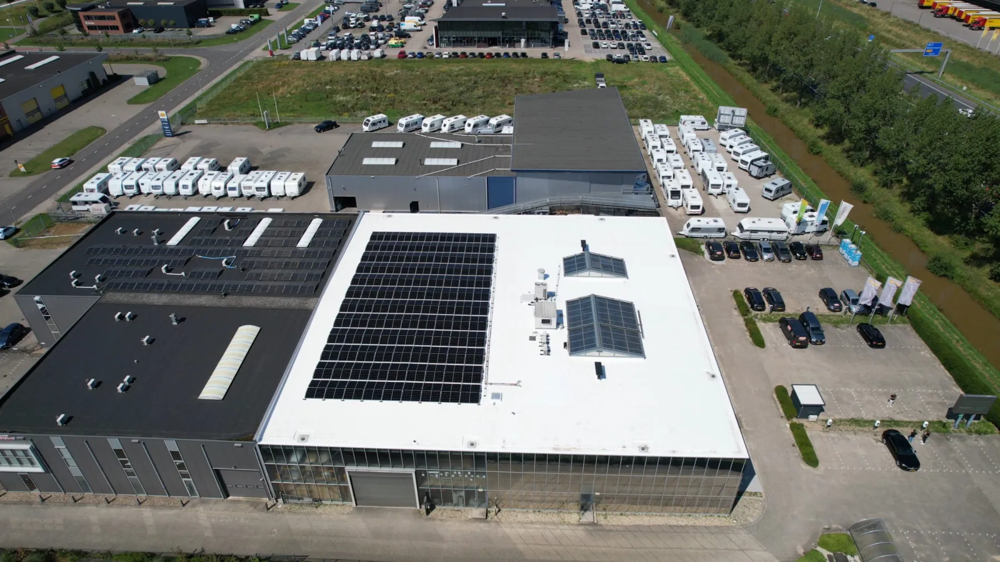
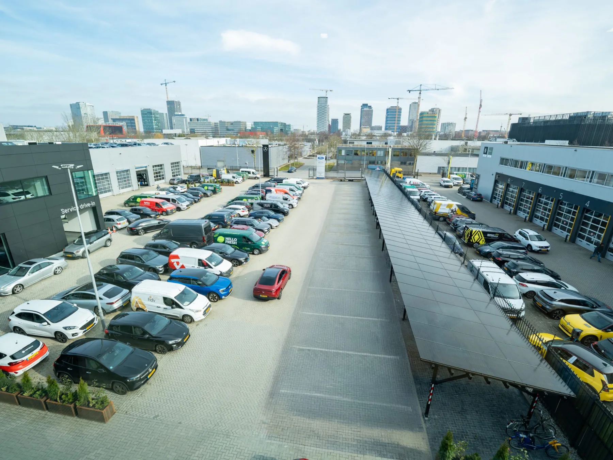
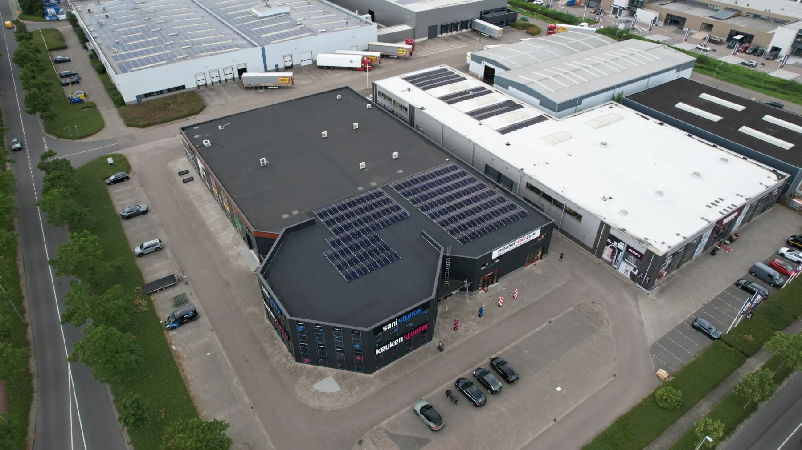
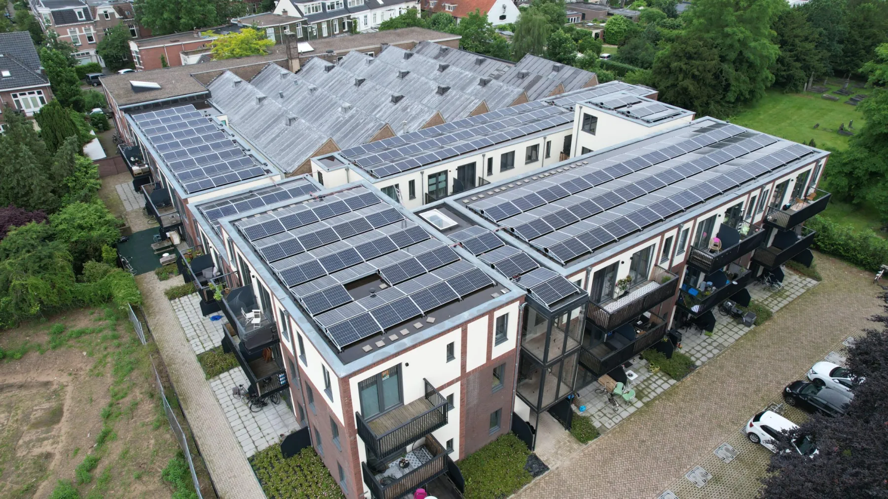
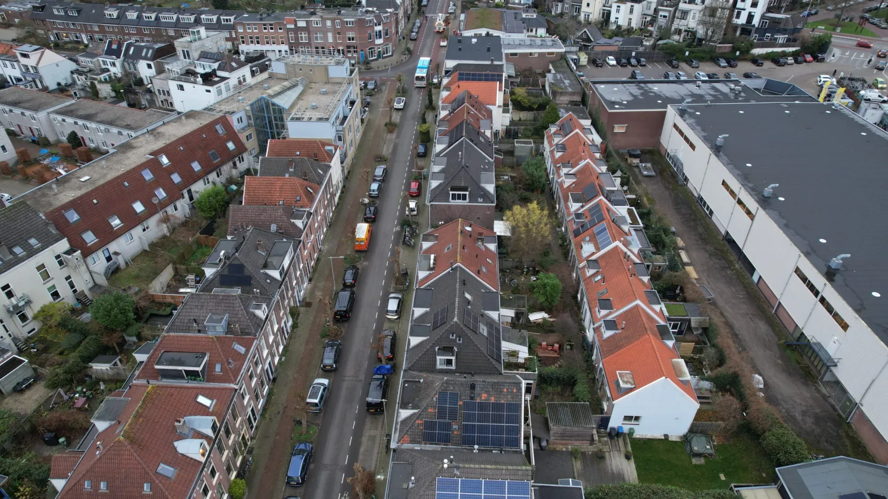

Geen theorie. Gerealiseerd.
Gerealiseerde projecten uit de periode juli 2023 tot en met maart 2026 — van batterijopslag en laadpleinen tot complete wooncomplexen. De waarden hieronder zijn die van de oplevering.

Zon, opslag en laden binnen 51 kW.
Een bedrijfspand met een transportvermogen van 51 kW, en tegelijk de wens om te verduurzamen én laadplekken toe te voegen voor de huurder. Zonder de aansluiting te verzwaren.
Elf locaties. Eén manier van werken.
Een bedrijfspand op een bedrijventerrein, een autobedrijf in de stad, een recreatiepark en wooncomplexen met tientallen tot honderden woningen. De techniek verschilt per locatie; de volgorde niet: eerst het meetprofiel, dan het ontwerp, dan de bouw, en daarna het beheer.
Wat hieronder staat, is wat er is opgeleverd. Geen prognoses, geen modellen.
De overige projecten.
10 projecten

Hedin Amsterdam
Groeien binnen 215 kW.
Maart 2026 · bekijk het project →
Hedin Alkmaar
Meer vermogen, in vier dagen.
Mei 2025 · bekijk het project →
Dormio Medemblik
Een park dat minder afhankelijk is van het net.
Oktober 2024 · bekijk het project →
Edisonweg 16, Purmerend
Opwekken binnen een beperkte teruglevercapaciteit.
Juli 2023 · bekijk het project →
Van Beethovenstraat, Nijmegen
62 woningen als één complex verduurzaamd.
Juni 2024 · bekijk het project →
Burchtstraat, Nijmegen
52 woningen verduurzaamd.
Oktober 2024 · bekijk het project →
Woningportefeuille Arnhem
60 woningen voor een belegger.
December 2024 · bekijk het project →
Ketsheuvel, Renkum
32 woningen, de grootste labelsprong.
December 2024 · bekijk het project →
Nieuw-Schoonoord, Velp
180 woningen in één traject.
Juni 2024 · bekijk het project →
Schouwburgring, Tilburg
160 woningen met eigen opwek.
December 2023 · bekijk het project →Uw locatie als volgende?
Stuur ons uw verbruiksgegevens en groeiplannen. Wij rekenen door wat er binnen uw bestaande aansluiting mogelijk is.